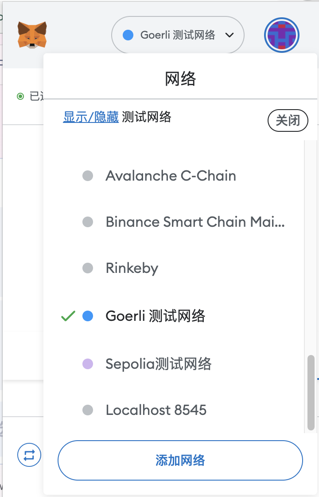
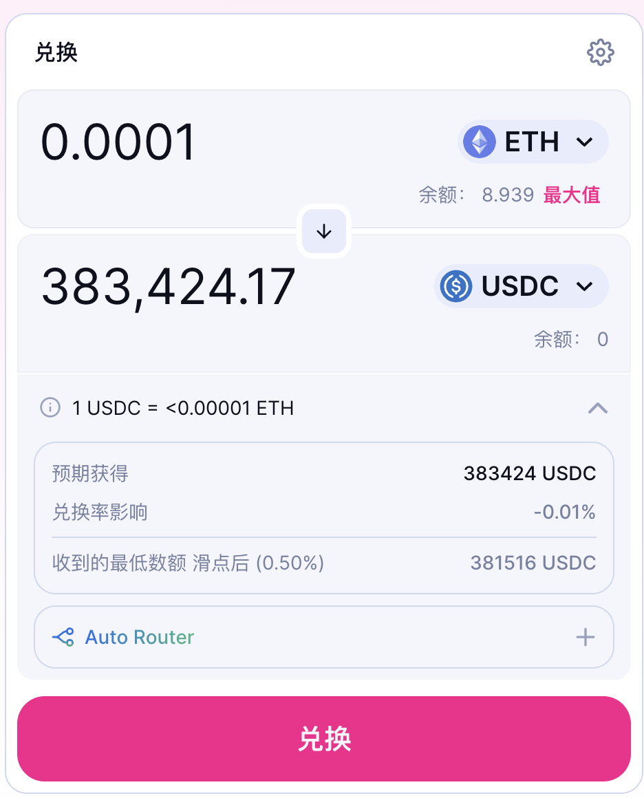
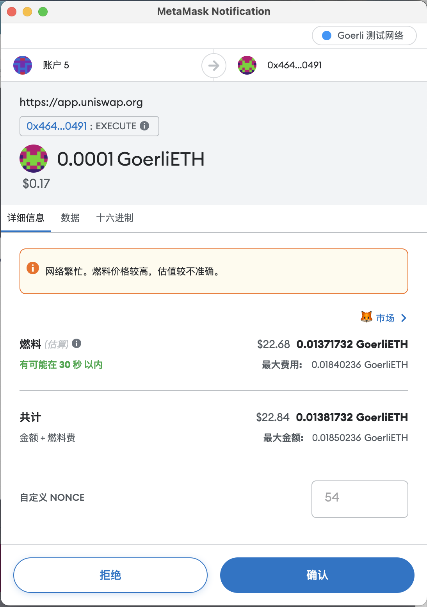
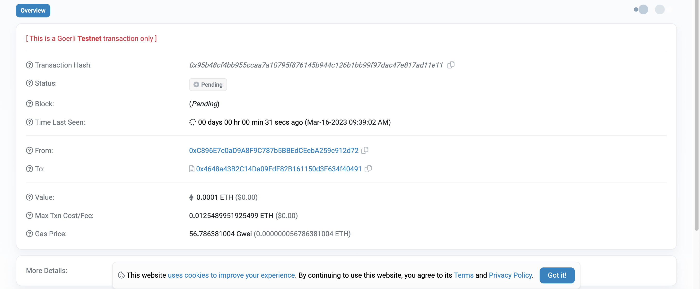
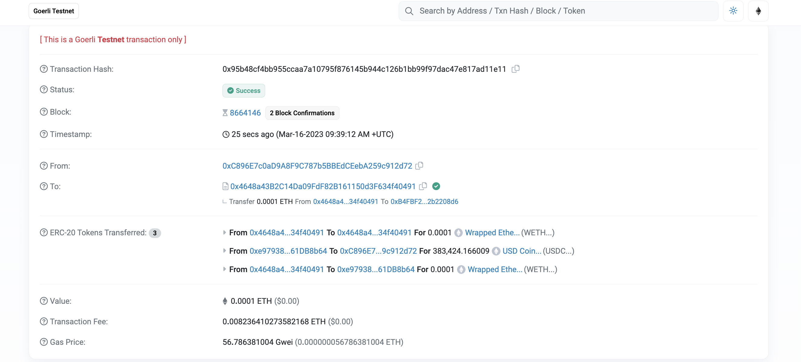

Get Started With Web3: 使用 Web3 的第一个 DApp
自学入门 Web3 不是一件容易的事，作为一个刚刚入门 Web3 的新人，梳理一下最简单直观的 Web3 小白入门教程。整合开源社区优质资源，为大家从入门到精通 Web3 指路。每周更新 1-3 讲。
欢迎关注我的推特：@bhbtc1337
北航区块链协会 DAO 推特：@BHBA_DAO
进入微信交流群请填表：表格链接
文章开源在 GitHub：Get-Started-with-Web3
Dapp 是什么
Dapp 是 Decentralized Application 的缩写，中文翻译为去中心化应用。Dapp 是一种基于区块链的应用，它的运行不依赖于中心化的服务器，而是依赖于区块链网络。Dapp 的运行结果会被写入区块链中，所有人都可以通过区块链查询到交易的执行结果。Dapp 的应用场景广泛，可应用于：
- 去中心化金融：著名的有：Uniswap、Compound、Aave、Synthetix、MakerDAO、Yearn Finance、Curve Finance、Balancer 等
- 去中心化社交：著名的有：Damus、Lens protocol 等
- NFT：著名的有：OpenSea、Rarible、SuperRare 等
- 其他：治理，投票 著名的有：Snapshot、Gnosis 等
运行 Dapp 的流程
运行 Dapp 的流程如下：
- 开发者创建一个区块链钱包，并获得一些以太币来支付交易费用。
- 开发者编写 Dapp 的智能合约，并使用 Solidity 编程语言进行编码。
- 开发者部署智能合约到以太坊网络中，例如通过 Remix 或 Truffle 等工具。
- 开发者创建一个前端应用程序来与智能合约进行交互，例如使用 React 或 AngularJS 等工具。
- 专业用户和开发者可以通过 web3 库连接前端应用程序和以太坊网络，以便与智能合约进行交互。
- 普通用户通过前端应用程序与智能合约进行交互，例如提交交易或查询数据。
作为快速入门，本文仅介绍第 6 步，即普通用户通过前端应用程序与智能合约进行交互。第 1-5 步的内容将在后续的文章中介绍。
使用 Web3 的第一个 DApp
这里以 Uniswap 为例，介绍如何使用 Web3 的第一个 DApp。
打开 Uniswap，点击
Metamask选择Görli 测试网络。点击Connect to a wallet，选择Metamask，然后点击Connect。
点击
Select a token，选择ETH，然后点击Select。点击Select a token，选择USDC，然后点击Select。 P.S. 现在Görli 测试网络上的 ETH 通过 LayerZero 跨链桥 可以兑换真 ETH，所以测试网 ETH 价格很高 hhh。
输入希望交换的金额
0.0001，然后点击Swap。点击Confirm Swap，然后点击Swap。
这时交易已经被提交到以太坊网络中，等待被打包。点击
View on Etherscan，然后点击View。
交易成功上链，可以在 以太坊区块浏览器 中查询到交易的执行结果。

总结
本文介绍了如何使用 Web3 的第一个 DApp，即使用 Uniswap 交换 Görli 测试网络 的以太币和比特币。这里使用的是 Görli 测试网络，因此交易费用非常低，可以随意尝试。如果你想在主网上交易，可以使用以太坊网络，但是交易费用会比较高，因此需要谨慎操作。Dapp 的流程中的第 1-5 步在本文中略去了，实际上它们也很重要，将在后续的进阶学习中介绍。现在，你可以作为用户参与到几乎所有的区块链 Dapp 应用了，恭喜！🎉🎉🎉 好玩归好玩，还是要继续学习哦。下一篇文章我们将进入进阶学习。